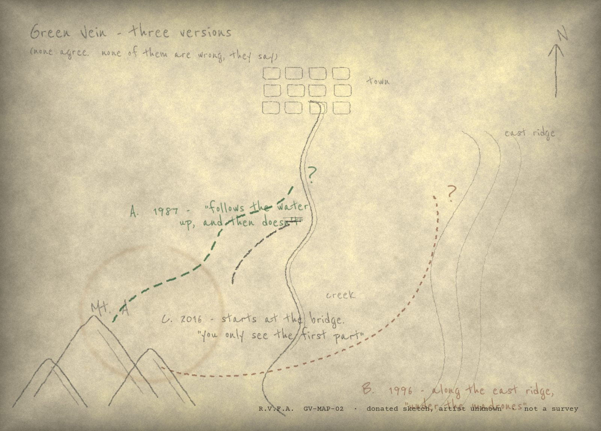
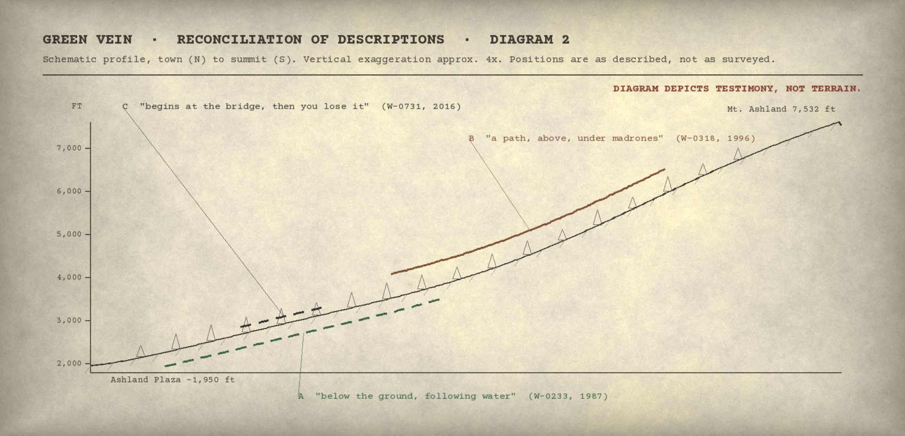
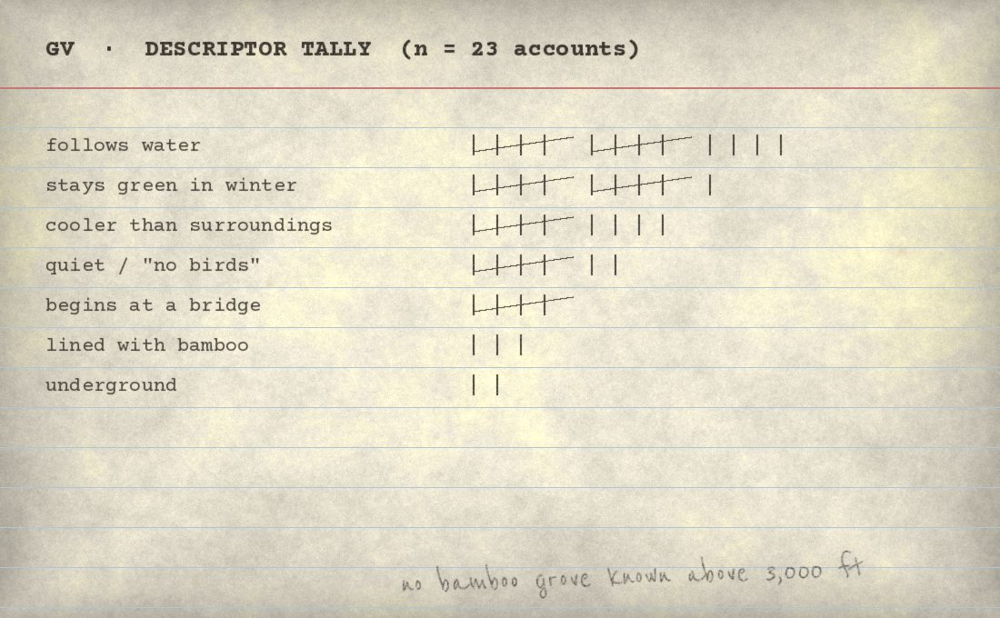
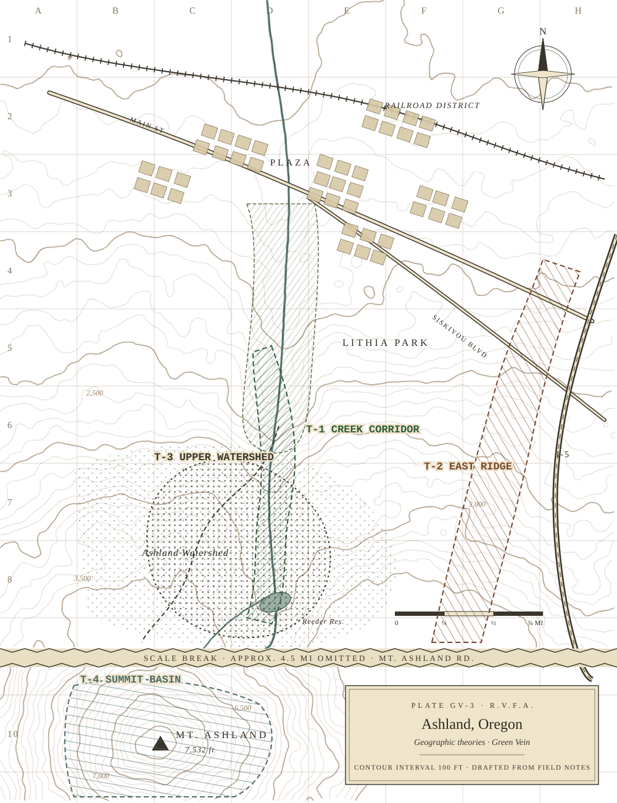
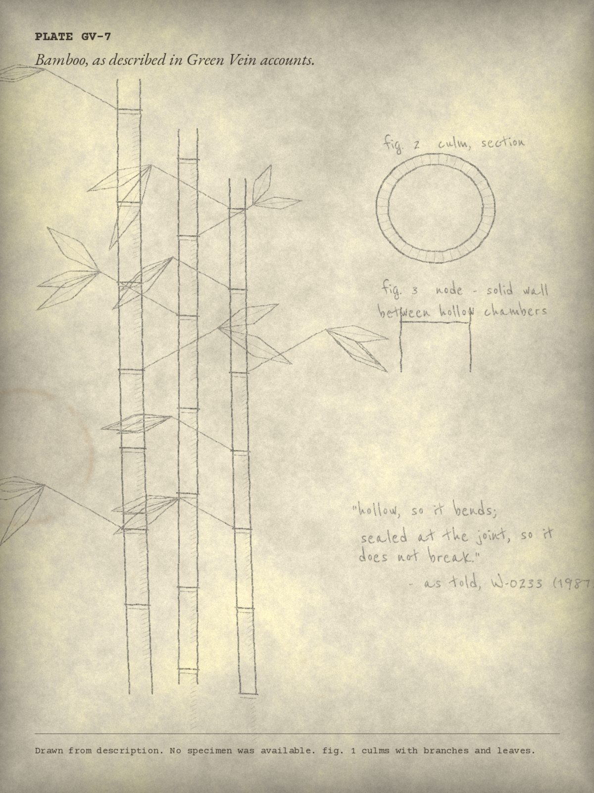

The Green Vein Tradition
References to a hidden location known as the Green Vein occur throughout Bamboo Avenger traditions. Descriptions vary considerably. No historical evidence has confirmed the existence of such a location.

What is said
In most tellings the Green Vein is a route rather than a place: a narrow way through the woods above town that “follows water,” stays green when the hillsides brown in late summer, and is noticeably cooler and quieter than the ground around it. In some tellings the subject is seen entering or leaving it.
Beyond that, accounts diverge. It runs underground, or along the east ridge, or begins at a footbridge and cannot be followed past the first bend. One account places it among stands of bamboo — though no bamboo grove is known in the watershed.
Folklore timeline
When each strand of the tradition first entered the record. Dates are when the archive received the account, not when the events described took place.
Entries marked Tradition concern the story itself rather than any report.
- 1987 Report
W-0233 describes a trail that “follows the water up, and then doesn’t.” First reference to the Green Vein. (RVF-1987-003)
- 1994 Oral history
W-0233 recorded in a community oral-history session. The name “Green Vein” first transcribed.
- c. 1994 Tradition
First recorded telling of the fire and the sole survivor. Source declined to be named. See origin narrative.
- 1996 Report
W-0318 places it along the east ridge, “under the madrones.” Account B.
- 1998 Search
Two volunteers walk the creek corridor following account A. Nothing noted.
- 2004 Tradition
“Bend. Listen. Act.” first written down, attributed to the Last Survivor. See Layer III.
- 2014 Search
Desk review of maps, flume records and trail inventories. No corresponding route or place name.
- 2016 Report
W-0731: it “begins at the bridge.” Account C. Sketch map GV-MAP-02 donated the same year.
- 2024 Artifact
Trail marker E-09 found at an unmapped junction, arrow toward the creek.
Reconciling the descriptions
F-1.3

| Account | Source | Description |
|---|---|---|
| A · 1987 | W-0233 | Below ground, following water uphill. |
| B · 1996 | W-0318 | A path along the east ridge, under madrones. |
| C · 2016 | W-0731 | Begins at the stone footbridge; “you only see the first part.” |
| D · 2024 | Marker E-09 | An arrow toward the creek at an unmapped junction. Interpretation only. |

Geographic theories
- T-1Creek corridor. The route follows Ashland Creek above Lithia Park. Supported by accounts A and C and by marker E-09. 11 accounts.
- T-2East ridge. A path on the ridge above the canyon, under madrones. Account B. 4 accounts.
- T-3Upper watershed. Somewhere above the reservoir, in closed municipal land. 5 accounts. Not searched.
- T-4Summit basin. A sheltered hollow below Mount Ashland. Associated with fragment A-17. 2 accounts.
- T-5No location. The Green Vein as a figure of speech for a way of walking, not a place. Proposed by several correspondents. Cannot be mapped.
Archive illustration
Bamboo is not native to the Ashland watershed, and no grove is known above 3,000 feet. Yet several Green Vein accounts describe the route as lined with it, and the oldest tellings describe it in close detail: hollow stems, sealed joints, leaves that “talk before the wind arrives.”
Plate GV-7 was drawn from those descriptions for the purposes of indexing. It is not drawn from life.
The tradition’s fuller form — the forest, the fire and the survivor — is preserved as told in Layer III.

Search history
- 1998Informal walk of the creek corridor by two volunteers following account A. Nothing noted.
- 2014Desk review of historical maps, ditch and flume records, and early trail inventories. No route or place name corresponds.
- 2024The junction at E-09 was visited with the marker’s arrow in mind. A short game trail descends to the creek and fades.
A request to readers
The Ashland watershed is a protected municipal water source and much of it is closed to off-trail travel. The archive asks that no one go looking for the Green Vein. Accounts of the tradition, old or new, are welcome in writing.
No historical evidence has confirmed the existence of such a location.